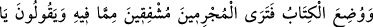
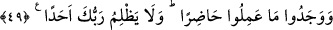

muttali olanlar bunlar değil midir? Ben hiç yaratılmamış olana imrenirim. Çünkü o
kıyâmet ahvâlini ve ondaki sıkıntıları görmeyecektir. Çünkü, durumu olduğu hâl üzere
gören kimsenin korkusu artar. Kendisi için bir hâl ve makam görmez. Oysa insan kendini
kurtaracak ve helâk edecek sebeplerden uzak olamaz. Şu halde edebli erler
hangileridir?
Rivâyet olunur ki “Hz. Ömer (r.a.) vefatından on iki sene sonra rüyada görüldü.
Alnını siliyor ve şöyle diyordu: “Şimdiye kadar hesap veriyordum. Halifeliğim
döneminde bakımsız bir köprüden geçerken aşağı düşen bir keçi yavrusunun ayağı
kırılmış, köprüyü niçin yaptırmadığım ve bu konuda suçlu olup olmadığım husûsunda
inceden inceye hesaba çekildim. Ancak Allah Teâlâ, bir çocuğun elinden satın alıp âzâd
ettiğim serçeden ötürü beni affetti.”
49. Kitap ortaya konmuştur: Suçluların, onda yazılı olanlardan korkmuş
olduklarını görürsün. “Vay hâlimize, bu nasıl kitapmış! Küçük büyük hiçbir şey
bırakmaksızın (yaptıklarımızın) hepsini sayıp dökmüş!” derler. Böylece yaptıklarını
karşılarında bulmuşlardır. Senin Rabbin hiç kimseye zulmetmez.
“Kitap ortaya konmuştur.” Bu âyette anlatılanlar da amel defterlerinin, sâhiplerinin
sağlarına, sollarına ya da mîzâna konulma vakti zikredilerek hatırlanması murad olunan
o korkunç işlerdendir.
İşte o vakit “suçluların, onda yazılı olanlardan” günahlardan ve onların mahşer
halkı önünde açığa çıkmasından “korkmuş olduklarını görürsün.”
Tâziyenâmeler gibi siyah oldu
Mektubun metni de kenarları da günahlarla doldu
Baştan başa cümlesi fısk ve mâsıyet oldu
Dâru’l-harb gibi kâfirlerle doldu
Öyle bir nâme ki murdar ve vebal dolu
Sağdan gelmez, soldan gelir
Hakîkatte bu yerde kendi nâmeni gör
Sol ele mi lâyıktır o nâme, yoksa sağ ele mi?
Mâdem ki doğru olmadın, bil ki solsun, eğrisin
Aslan ve maymunun nârâsı âşikârdır
Eğer solsan, eğriysen Hz. Hak ile doğru ol